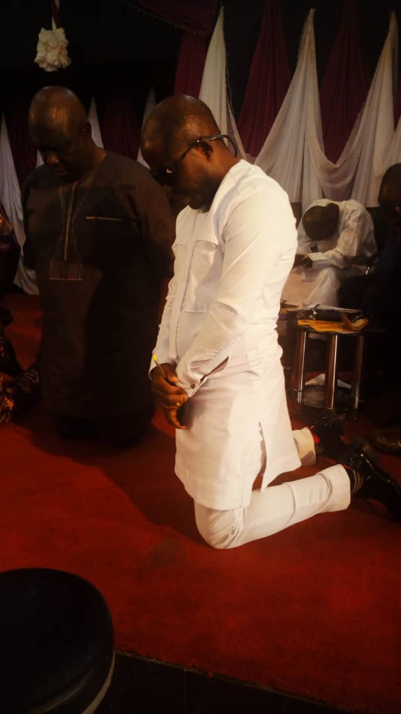
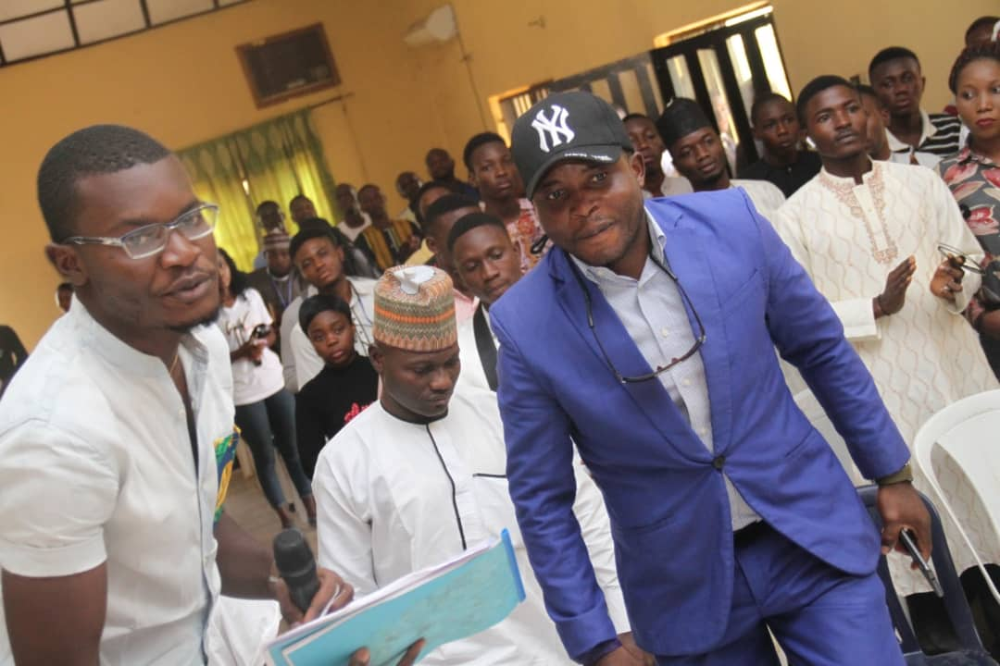
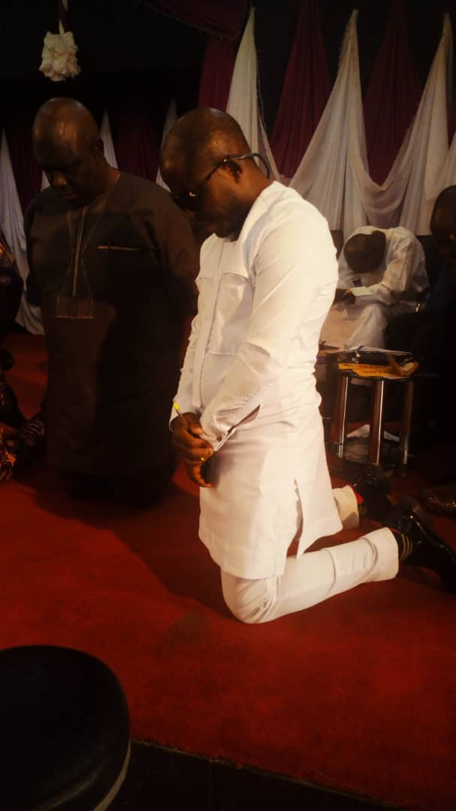
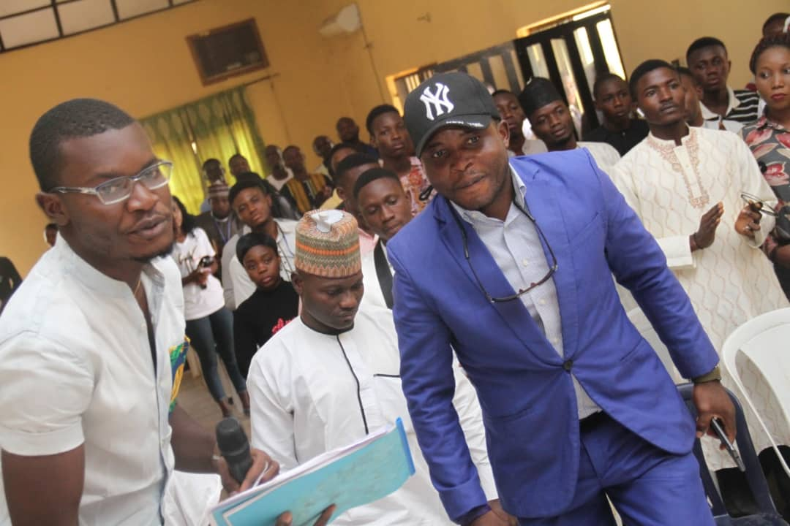

Sunday
Bala Oma
For Governor
Kogi My Priority
Show your support for Kogi State,support Sunday. Sign up for updates and join our team.
Take action for Kogi state With Sunday Bala Before Its Too Late
MY MISSION
& Vision
To, in partnership with Civil Societies and other various key stakeholders in the state, advocate, engage, enable and empower Kogites via programs and projects, geared at ensuring basic essential needs of Kogites are improved .
1. The Basic and Essential needs of Kogites include:
- - Quality Education
- - Improved Health Care System
- - Availability of potable water supply
- - Clean and Healthy Environment
- - Improved power supply
2. Massive Infrastructural Development in both the urban and rural areas
3. Private - Public Partnerships (PPP) Initiatives by creating opportunities and platforms to bring the government and people/investors together for the economic prosperity of Kogi. Thus, create job opportunities in the state.
4. Tackle Security challenges in the state, thus, providing a safe and sustainable community for all Kogites.
5. Develop Agricultural Opportunities by Improving on Existing Farming Infrastructures and Network by:
- - Provision of Arable lands for agricultural expansion
- - Availability of fertilizers for farmers
- - Create Crowd - funding Opportunities for Agric Investors and Farmers
- - Provision of Storage Silos and Houses when crops are season to ensure farming season is extended
- - Explore Exportation of Cash Crops such as Oil Palm, Cashew, Cassava and the others
6. Increase Kogi state local market share
Meet Sunday Bala Oma
 



Sunday Bala
Sunday was born on October 1st 1982,by late Mr. & Mrs Alfa of Akpelu/Odu, Dekina Local Government Area of Kogi State. He attended Command Children School Jos (1987-1993) and continued his secondary education at Command Secondary School Jos (1993-1999). He held the positions of the School Prefect: House Captain. His University Education kick started at the Kogi State University, where he studied Geology (BSc.) (2005-2010).
During his undergraduate studies, he was acknowledged as a dedicated Industrial Training student at Obajana Cement Company (Dangote Group) where he did his Student Industrial Training in 2007 as a Site Geologist. He remains the first and only undergraduate student to have written and published two books and was acknowledged by the then Vice Chancellor, Prof. FS Idachaba of blessed memory.
He did his NYSC at Bayelsa state. Opokuma, Kolokuma Local Government Area where he served as the Corps Liaison Officer and was honoured with Local, State and National NYSC/MDGs awards for his developmental projects in the community where he served between 2010 and 2011.
CURRENTLY, He runs a Non Governmental Organization known as Sunday Bala Oma Foundation. It’s a registered NGO that advocates for good governance and qualitative education in Nigeria. So far, 24,509 Nigerians have benefitted directly and 105,340 indirectly. 60% of these beneficiaries are Kogi indigenes.
Bala Sunday Oma is an advocate for good governance, a public affairs analyst, an entrepreneur and a public speaker. He is also a prolific author with five books to his name, with one of them currently on the shelf of 5 American universities as research material including :
- Stanford University, California USA.
- University of California, USA.
- New York Public Library System, USA.
- North Western University, Bloomington USA.
- Indiana University, USA.
....
Other books authored by him are;
- The Generations of our fathers.
- Understanding the times.
- Global Information.
- God’s “Willogy”, the study of God’s will.
PLANS FOR THE FIRST 100 DAYS IN OFFICE
Kogi My Priority
Show your support for Kogi State,support Sunday. Sign up for updates and join our team.
Endorsed by ADP